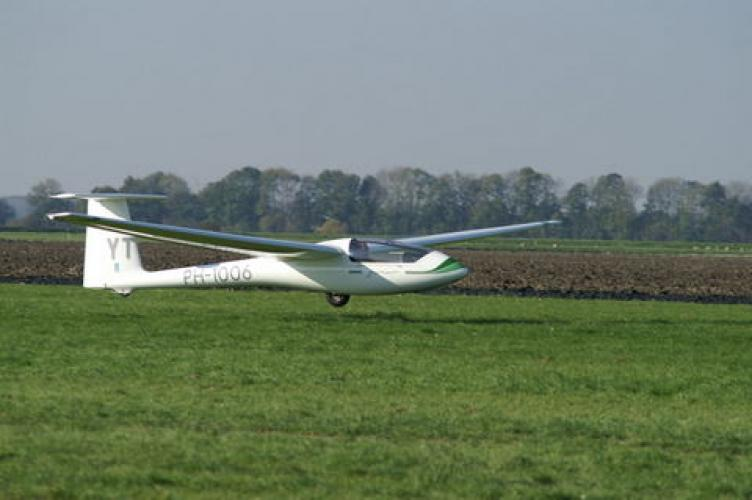

De Junior is de overgangstrainer van ZC Flevo. Na een aantal solovluchten op de tweezitters, is dit de eerste eenzitter waar solisten mee mogen vliegen. De Junior is erg makkelijk te vliegen en gaat door zijn lage gewicht als een speer omhoog in de thermiek.
| Registratie | Callsign | Bouwjaar | Spanwijdte | Lengte | leeggewicht | Overtreksnelheid | Maximum Snelheid | Beste Glijgetal | Aerobatics |
|---|---|---|---|---|---|---|---|---|---|
| pH-1006 | YT | 1993 | 15 Meter | 6,69 meter | 225 Kg | 60 Km/h | 220 Km/h | 35 (bij 80 Km/h) | Niet toegestaan |